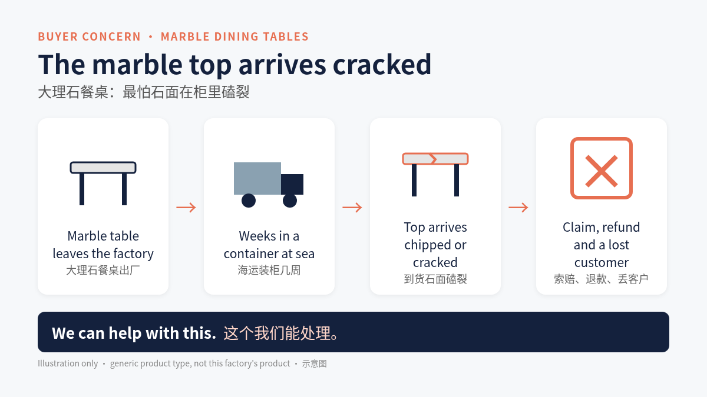

Homeylife Furniture Co., Ltd.
Stainless Steel and Marble Dining Furniture, Foshan, Guangdong, China
About
Homeylife Furniture, established in 2018, works on research, development, sale and service of marble dining tables, stainless steel dining tables, occasional and coffee tables, dining chairs and bookshelves. (source)
Marble dining tables: what buyers worry about most
For stainless steel and marble dining tables, overseas buyers worry most that the marble top arrives chipped or cracked after weeks in a container. A damaged top means a claim, a refund and often a lost customer.

We can help with this.
What they make
- Marble dining tables
- Stainless steel dining tables
- Dining chairs
- Coffee and occasional tables
- Bookshelves
Source: source
Key facts, per public pages, to be confirmed with you
| Address | Longjiang Xiexing Shopping Center, No. 9 Wenhua Road, Wenhuacommunity, Longjiang Town, Shunde District, Foshan City, Guangdong Provinc, Foshan, Guangdong, China (source) |
|---|---|
| Year of establishment | 2018-06-29 (source) |
| Business type | Manufacturer/Factory & Trading Company (source) |
| OEM | Available (source) |
| Payment / port | T/T 30% deposit, 70% before loading; FOB Shenzhen or Guangzhou (source) |
Featured product: HT25 stainless steel base, marble top dining table
| Size | 1800 x 900 x 750 mm |
|---|---|
| Top | Marble, 20 mm, grey |
| Base | 201 stainless steel, 1.2 mm, silver chrome |
| Packing | Flat pack with wood crate; PE foam, polyfoam, carton |
| Volume | 0.33 cbm per piece |
| HS code | 94038920 |
Source: source
To be confirmed with you
- Lead time: To be confirmed with you.
- MOQ: To be confirmed with you.
- Number of employees: To be confirmed with you.
- Monthly capacity: To be confirmed with you.
- Certifications: To be confirmed with you.
Sources
- Made-in-China shop: https://homeylife.en.made-in-china.com/
- Official site: https://www.homeylifefur.com/
- Product page HT25: https://homeylife.en.made-in-china.com/product/jFcakMhHrAVW/China-New-Design-Household-Stainless-Steel-Base-Marble-Top-Dining-Table.html
Source and status note
All non-blank content above is reorganised from the public pages listed in Sources (accessed October 2026). Blank fields had no public figure or had conflicting figures across sources. This page is a format sample prepared by QiaoReach, an export growth service, to show how a factory's existing public data can be made readable to Google and buyer-side AI outside the platform. It is not affiliated with, endorsed by, or published for Homeylife, and has not been confirmed by the factory.